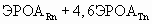

Утверждены
Постановлением Главного
государственного
санитарного врача
Российской Федерации
от 10.06.2010 N 64
САНИТАРНО-ЭПИДЕМИОЛОГИЧЕСКИЕ ТРЕБОВАНИЯ
К УСЛОВИЯМ ПРОЖИВАНИЯ В ЖИЛЫХ ЗДАНИЯХ И ПОМЕЩЕНИЯХ
Санитарно-эпидемиологические правила и нормативы
СанПиН 2.1.2.2645-10
(в ред. Изменений и дополнений N 1, утв. Постановлением Главного
государственного санитарного врача РФ от 27.12.2010 N 175)
I. Общие положения и область применения
1.1. Санитарные правила и нормативы (далее - санитарные правила) разработаны в соответствии с законодательством Российской Федерации.
1.2. Настоящие санитарные правила устанавливают обязательные санитарно-эпидемиологические требования к условиям проживания в жилых зданиях и помещениях, которые следует соблюдать при размещении, проектировании, реконструкции, строительстве и эксплуатации жилых зданий и помещений, предназначенных для постоянного проживания.
1.3. Требования настоящих санитарных правил не распространяются на условия проживания в зданиях и помещениях гостиниц, общежитий, специализированных домов для инвалидов, детских приютов, вахтовых поселков.
1.4 Санитарные правила предназначены для граждан, индивидуальных предпринимателей и юридических лиц, деятельность которых связана с проектированием, строительством, реконструкцией и эксплуатацией жилых зданий и помещений, а также для органов, уполномоченных осуществлять государственный санитарно-эпидемиологический надзор.
1.5. Контроль за соблюдением требований настоящих санитарных правил осуществляется органами, уполномоченными осуществлять государственный санитарно-эпидемиологический надзор в соответствии с законодательством Российской Федерации.
II. Гигиенические требования к участку и территории жилых
зданий при их размещении
2.1. Жилые здания должны располагаться в соответствии с генеральным планом территории, функциональным зонированием территории города, поселка и других населенных пунктов.
(п. 2.1 в ред. Изменений и дополнений N 1, утв. Постановлением Главного государственного санитарного врача РФ от 27.12.2010 N 175)
2.2. Участок, отводимый для размещения жилых зданий, должен:
- находиться за пределами территории промышленно-коммунальных, санитарно-защитных зон предприятий, сооружений и иных объектов, первого пояса зоны санитарной охраны источников водоснабжения и водопроводов питьевого назначения;
- соответствовать требованиям, предъявляемым к содержанию потенциально опасных для человека химических и биологических веществ, биологических и микробиологических организмов в почве, качеству атмосферного воздуха, уровню ионизирующего излучения, физических факторов (шум, инфразвук, вибрация, электромагнитные поля) в соответствии с санитарным законодательством Российской Федерации.
2.3. Отводимый под строительство жилого здания земельный участок должен предусматривать возможность организации придомовой территории с четким функциональным зонированием и размещением площадок отдыха, игровых, спортивных, хозяйственных площадок, гостевых стоянок автотранспорта, зеленых насаждений.
2.4. При озеленении придомовой территории жилых зданий необходимо учитывать, что расстояние от стен жилых домов до оси стволов деревьев с кроной диаметром до 5 м должно составлять не менее 5 м. Для деревьев большего размера расстояние должно быть более 5 м, для кустарников - 1,5 м. Высота кустарников не должна превышать нижнего края оконного проема помещений первого этажа.
2.5. По внутридворовым проездам придомовой территории не должно быть транзитного движения транспорта. К площадкам мусоросборников необходимо предусматривать подъезд для специального транспорта.
2.6. Расстояния между жилыми, жилыми и общественными, а также производственными зданиями следует принимать в соответствии с гигиеническими требованиями к инсоляции и солнцезащите помещений жилых и общественных зданий и территорий.
2.7. При размещении жилых зданий предусматривается их обеспечение водоснабжением, канализацией, теплоснабжением, электроснабжением.
(п. 2.7 в ред. Изменений и дополнений N 1, утв. Постановлением Главного государственного санитарного врача РФ от 27.12.2010 N 175)
2.8. На земельных участках должны быть предусмотрены подъезды и проходы к каждому зданию. Места для размещения стоянок или гаражей для автомобилей должны соответствовать гигиеническим требованиям к санитарно-защитным зонам и санитарной классификации предприятий, сооружений и иных объектов.
На придомовых территориях запрещается производить мойку автомашин, слив топлива и масел, регулировать звуковые сигналы, тормоза и двигатели.
2.9. Площадки перед подъездами домов, проездные и пешеходные дорожки должны иметь твердые покрытия. При устройстве твердых покрытий должна быть предусмотрена возможность свободного стока талых и ливневых вод.
2.10. На территории дворов жилых зданий запрещается размещать любые предприятия торговли и общественного питания, включая палатки, киоски, ларьки, мини-рынки, павильоны, летние кафе, производственные объекты, предприятия по мелкому ремонту автомобилей, бытовой техники, обуви, а также автостоянок кроме гостевых.
(в ред. Изменений и дополнений N 1, утв. Постановлением Главного государственного санитарного врача РФ от 27.12.2010 N 175)
2.11. Уборка территории должна проводиться ежедневно, включая в теплое время года - полив территории, в зимнее время - антигололедные мероприятия (удаление, посыпание песком, антигололедными реагентами и другое).
2.12. Территория дворов жилых зданий должна быть освещена в вечернее время суток. Нормы освещенности приведены в приложении 1 к настоящим санитарным правилам.
III. Гигиенические требования к жилым
помещениям и помещениям общественного назначения,
размещаемых в жилых зданиях
3.1. Размещение жилых помещений квартир в цокольных и подвальных этажах не допускается.
3.2. В жилых зданиях допускается размещение помещений общественного назначения, инженерного оборудования и коммуникаций при условии соблюдения гигиенических нормативов по шуму, инфразвуку, вибрации, электромагнитным полям.
В подвальных и цокольных этажах таких жилых домов допускается устройство встроенных и встроенно-пристроенных стоянок для автомашин и мотоциклов при условии герметичности потолочных перекрытий и оборудованием устройства для отвода выхлопных газов автотранспорта.
3.3. Помещения общественного назначения, встроенные в жилые здания, должны иметь входы, изолированные от жилой части здания.
3.4. Не допускается размещение в жилых помещениях промышленных производств.
3.5. При размещении под жилыми зданиями гаражей-стоянок необходимо отделять их от жилой части здания этажом нежилого назначения. Размещение над гаражами помещений для работы с детьми, помещений лечебно-профилактического назначения не допускается.
3.6. В жилых зданиях любой этажности на первом, цокольном или подвальном этажах следует предусматривать кладовую для хранения уборочного инвентаря, оборудованную раковиной. Допускается устройство кладовых площадью не менее 3 м2/чел. для жильцов дома: хозяйственных, для хранения овощей, а также для твердого топлива. При этом выход из этажа, где размещаются кладовые, должен быть изолирован от жилой части. Прокладка канализационных сетей в хозяйственных кладовых запрещается.
3.7. Помещения общественного назначения, встроенные в жилые здания, должны иметь входы, изолированные от жилой части здания, при этом участки для стоянки автотранспорта персонала должны располагаться за пределами придомовой территории.
Загрузка материалов, продукции для помещений общественного назначения со стороны двора жилого дома, где расположены окна и входы в квартиры, не допускается. Загрузку следует выполнять: с торцов жилых зданий, не имеющих окон; из подземных тоннелей или закрытых дебаркадеров; со стороны магистралей.
Загрузочные помещения допускается не устраивать при площади встроенных общественных помещений до 150 м2.
3.8. В жилых зданиях не допускается расположение ванных комнат и туалетов непосредственно над жилыми комнатами и кухнями, за исключением двухуровневых квартир, в которых допускается размещение уборной и ванной (или душевой) непосредственно над кухней.
(п. 3.8 в ред. Изменений и дополнений N 1, утв. Постановлением Главного государственного санитарного врача РФ от 27.12.2010 N 175)
3.9. Не допускается устраивать вход в помещение, оборудованное унитазом, непосредственно из кухни и жилых комнат, за исключением входа из спальни в совмещенный санузел при условии наличия в квартире второго помещения, оборудованного унитазом, с входом в него из коридора или холла.
3.10. Жилые здания высотой более пяти этажей должны быть оборудованы лифтами (грузовыми и пассажирскими). При оборудовании дома лифтами габариты одной из кабин должны обеспечивать возможность транспортирования человека на носилках или инвалидной коляске.
3.11. Над жилыми комнатами, под ними, а также смежно с ними не допускается размещать машинное отделение и шахты лифтов, мусороприемную камеру, ствол мусоропровода и устройство для его очистки и промывки, электрощитовую.
IV. Гигиенические требования к отоплению, вентиляции,
микроклимату и воздушной среде помещений
4.1. Системы отопления и вентиляции должны обеспечивать допустимые условия микроклимата и воздушной среды помещений. Оптимальные и допустимые параметры микроклимата в помещениях жилых зданий приведены в приложении 2 к настоящим санитарным правилам.
(в ред. Изменений и дополнений N 1, утв. Постановлением Главного государственного санитарного врача РФ от 27.12.2010 N 175)
4.2. Системы отопления должны обеспечивать равномерное нагревание воздуха в помещениях в течение всего отопительного периода, не создавать запахи, не загрязнять воздух помещений вредными веществами, выделяемыми в процессе эксплуатации, не создавать дополнительного шума, должны быть доступными для текущего ремонта и обслуживания.
4.3. Исключен. - Изменения и дополнения N 1, утв. Постановлением Главного государственного санитарного врача РФ от 27.12.2010 N 175.
4.4. Нагревательные приборы должны быть легко доступны для уборки. При водяном отоплении температура поверхности нагревательных приборов не должна превышать 90 °C. Для приборов с температурой нагревательной поверхности более 75 °C необходимо предусматривать защитные ограждения.
4.5. Помещения первых этажей жилых зданий, расположенных в I климатическом районе, должны иметь системы отопления для равномерного прогрева поверхности полов.
4.6. Устройство автономных котельных для теплоснабжения жилых зданий допускается при соблюдении гигиенических требований к качеству атмосферного воздуха населенных мест, гигиенических нормативов по шуму и вибрации.
4.7. Естественная вентиляция жилых помещений должна осуществляться путем притока воздуха через форточки, фрамуги, либо через специальные отверстия в оконных створках и вентиляционные каналы. Вытяжные отверстия каналов должны предусматриваться на кухнях, в ванных комнатах, туалетах и сушильных шкафах.
Устройство вентиляционной системы должно исключать поступление воздуха из одной квартиры в другую.
Не допускается объединение вентиляционных каналов кухонь и санитарных узлов с жилыми комнатами.
4.8. Вентиляция объектов, размещенных в жилых зданиях, должна быть автономной. Допускается присоединять к общей вытяжной системе жилого здания вытяжную вентиляцию общественных помещений, не имеющих вредных выбросов.
4.9. Шахты вытяжной вентиляции должны выступать над коньком крыши или плоской кровли на высоту не менее 1 м.
4.10. Концентрация химических веществ в воздухе жилых помещений при вводе зданий в эксплуатацию не должна превышать среднесуточных предельно допустимых концентраций (далее - ПДК) загрязняющих веществ, установленных для атмосферного воздуха населенных мест, а при отсутствии среднесуточных ПДК не превышать максимальные разовые ПДК или ориентировочных безопасных уровней воздействия (далее - ОБУВ).
V. Гигиенические требования к естественному
и искусственному освещению и инсоляции
5.1. Жилые комнаты и кухни жилых домов должны иметь естественное освещение через светопроемы в наружных ограждающих конструкциях здания.
5.2. Коэффициент естественной освещенности (далее - КЕО) в жилых комнатах и кухнях должен быть не менее 0,5%.
5.3. При одностороннем боковом освещении в жилых зданиях нормативное значение КЕО должно обеспечиваться в расчетной точке, расположенной на пересечении вертикальной плоскости характерного разреза помещения и плоскости пола на расстоянии 1 м от стены, наиболее удаленной от светопроемов: в одной комнате - для одно-, двух- и трехкомнатных квартир, и в двух комнатах для четырех- и пятикомнатных квартир. В остальных комнатах многокомнатных квартир и в кухне нормативное значение КЕО при боковом освещении должно обеспечиваться в расчетной точке, расположенной в центре помещения на плоскости пола.
5.4. Все помещения жилых зданий должны быть обеспечены общим и местным искусственным освещением.
5.5. Освещенность на лестничных площадках, ступенях лестниц, в лифтовых холлах, поэтажных коридорах, вестибюлях, подвалах и чердаках должна быть не ниже 20 лк на полу.
5.6. Над каждым основным входом в жилой дом должны быть установлены светильники, обеспечивающие на площадке входа освещенность не менее 6 лк, для горизонтальной поверхности и не менее 10 лк, для вертикальной поверхности на высоте 2,0 м от пола. Должно быть также предусмотрено освещение пешеходной дорожки у входа в здание.
5.7. Жилые помещения и придомовая территория должны обеспечиваться инсоляцией в соответствии с гигиеническими требованиями к инсоляции и солнцезащите помещений жилых и общественных зданий.
5.8. Нормируемая продолжительность непрерывной инсоляции для помещений жилых зданий устанавливается на определенные календарные периоды дифференцированно в зависимости от типа квартир, функционального назначения помещений, планировочных зон города и географической широты местности:
- для северной зоны (севернее 58° с.ш.) - не менее 2,5 ч. в день с 22 апреля по 22 августа;
- для центральной зоны (58° с.ш. - 48° с.ш.) - не менее 2,0 ч. в день с 22 марта по 22 сентября;
- для южной зоны (южнее 48° с.ш.) - не менее 1,5 ч. в день с 22 февраля по 22 октября.
5.9. Нормативная продолжительность инсоляции должна быть обеспечена не менее чем в одной комнате 1 - 3-комнатных квартир и не менее чем в двух комнатах 4-х и более комнатных квартир.
5.10. Допускается прерывистость продолжительности инсоляции, при которой один из периодов должен быть не менее 1 часа. При этом суммарная продолжительность нормируемой инсоляции должна увеличиваться на 0,5 часа соответственно для каждой зоны.
5.11. Для жилых зданий, расположенных в северной и центральной зонах, допускается снижение продолжительности инсоляции на 0,5 часа в следующих случаях:
- в двухкомнатных и трехкомнатных квартирах, где инсолируется не менее двух комнат;
- в четырех и многокомнатных квартирах, где инсолируется не менее трех комнат;
- при реконструкции жилой застройки, расположенной в центральной и исторической зонах городов, определенных их генеральными планами развития.
5.12. На детских игровых площадках и спортивных площадках, расположенных на придомовой территории, продолжительность инсоляции должна составлять не менее 3-х часов на 50% площадок участка независимо от географической широты.
VI. Гигиенические требования к уровням шума,
вибрации, ультразвука и инфразвука, электромагнитных полей
и излучений, ионизирующего излучения
(в ред. Изменений и дополнений N 1, утв. Постановлением Главного государственного санитарного врача РФ от 27.12.2010 N 175)
6.1. Предельно допустимые уровни звукового давления, эквивалентные и максимальные уровни звука в помещениях жилых зданий и на территории жилой застройки приведены в приложении 3 к настоящим санитарным правилам.
6.1.1. Уровни шума от внешних источников в жилых помещениях оцениваются с учетом их измерения при открытых форточках, фрамугах, узких створках окон.
6.1.2. Эквивалентные и максимальные уровни звука в дБА для шума, создаваемого на территории средствами автомобильного, железнодорожного транспорта в 2 м от ограждающих конструкций первого эшелона шумозащитных типов жилых зданий, обращенных в сторону магистральных улиц общегородского и районного значения, железных дорог, допускается принимать на 10 дБА выше (поправка = +10 дБА), указанных во второй строке приложения 3 к настоящим санитарным правилам.
6.1.3. Уровни звукового давления в октавных полосах частот в дБ, уровни звука и эквивалентные уровни звука в дБА для шума, создаваемого в помещениях и на территориях, прилегающих к зданиям, системами кондиционирования воздуха, воздушного отопления и вентиляции и другим инженерно-технологическим оборудованием самого здания, следует принимать на 5 дБА ниже (поправка = минус (-) 5 дБА), указанных в приложении 3 к настоящим санитарным правилам (поправку для тонального и импульсного шума в этом случае принимать не следует).
6.1.4. Для тонального и импульсного шума следует принимать поправку минус (-) 5 дБА.
6.2. Предельно допустимые уровни вибрации в жилых помещениях приведены в приложении 4 к настоящим санитарным правилам.
6.2.1. В дневное время в жилых помещениях допустимо превышение нормативных уровней на 5 дБ.
6.2.2 Для непостоянной вибрации к допустимым значениям уровней, приведенных в приложении 4 к настоящим санитарным правилам, вводится поправка минус (-) 10 дБ, а абсолютные значения умножаются на 0,32.
6.3. Предельно допустимые уровни инфразвука на территории жилой застройки и в жилых зданиях приведены в приложении 5 к настоящим санитарным правилам.
6.4. Предельно допустимые уровни электромагнитных полей (далее - ЭМП) при воздействии на население.
6.4.1. Предельно допустимый уровень ослабления геомагнитного поля в помещениях жилых зданий устанавливается равным 1,5.
6.4.2. Предельно допустимый уровень напряженности электростатического поля в жилых помещениях составляет 15 кВ/м.
6.4.3. На территории населенных мест предельно допустимая напряженность переменного электрического поля с частотой 50 Гц на высоте 2 м составляет 1000 В/м, а в жилых помещениях предельно допустимая напряженность переменного электрического поля с частотой 50 Гц на высоте от 0,5 до 2 м от пола составляет 500 В/м.
6.4.4. Допустимые уровни ЭМП диапазона частот 30 кГц - 300 ГГц для населения (на селитебной территории, в местах массового отдыха, внутри жилых помещений) приведены в приложении 6 к настоящим санитарным правилам.
6.4.5. Требования настоящего раздела не распространяются на электромагнитное воздействие случайного характера, а также создаваемое передвижными передающими радиотехническими объектами.
6.4.6. Допустимая напряженность переменного магнитного поля приведена в приложении 7 к настоящим санитарным правилам.
6.4.7. Уровни напряженности электрического поля частотой 50 Гц, создаваемые питающим и силовым оборудованием передающих радиотехнических объектов (ПРТО) внутри жилых зданий, не должны превышать предельно допустимые уровни для населения.
6.5. Допустимые уровни ионизирующего излучения.
6.5.1. Мощность эффективной дозы гамма-излучения внутри зданий не должна превышать мощности дозы на открытой местности более чем на 0,2 мкЗв/час.
6.5.2. Среднегодовая эквивалентная равновесная объемная активность дочерних продуктов радона и торона в воздухе помещений

не должна превышать 100 Бк/м3 для строящихся и реконструируемых зданий и 200 Бк/м3 для эксплуатируемых.VII. Требования к внутренней отделке жилых помещений
7.1. Выделение вредных химических веществ из строительных и отделочных материалов, а также из материалов, используемых для изготовления встроенной мебели, не должно создавать в жилых помещениях концентраций, превышающих нормативные уровни, установленные для атмосферного воздуха населенных мест.
7.2. Уровень напряженности электростатического потенциала на поверхности строительных и отделочных материалов не должен превышать 15 кВ/м (при относительной влажности воздуха 30 - 60%).
(в ред. Изменений и дополнений N 1, утв. Постановлением Главного государственного санитарного врача РФ от 27.12.2010 N 175)
7.3. Эффективная удельная активность природных радионуклидов в строительных материалах, используемых в строящихся и реконструируемых зданиях, не должна превышать 370 Бк/кг.
7.4. Исключен. - Изменения и дополнения N 1, утв. Постановлением Главного государственного санитарного врача РФ от 27.12.2010 N 175.
VIII. Требования к инженерному оборудованию
8.1. Требования к водоснабжению и канализации
8.1.1. В жилых зданиях следует предусматривать хозяйственно-питьевое и горячее водоснабжение, а также канализацию и водостоки.
В районах без централизованных инженерных сетей допускается предусматривать строительство 1 и 2-этажных жилых зданий с неканализованными уборными.
В I, II, III климатических районах, за исключением IIIБ подрайона, в 1 и 2-этажных зданиях допускаются теплые неканализованные уборные (люфт-клозеты и так далее) в пределах отапливаемой части здания.
8.1.2. Соединение сетей питьевого водопровода с сетями водопроводов, подающих воду непитьевого качества, не допускается. Качество водопроводной воды должно соответствовать гигиеническим требованиям к качеству воды централизованных систем питьевого водоснабжения.
8.1.3. Не допускается соединять вытяжную часть канализационных стояков с вентиляционными системами и дымоходами. На сетях бытовой канализации устройство смотровых колодцев внутри здания не допускается.
8.2. Требования к удалению бытовых отходов и мусора
8.2.1. При наличии мусоропровода в жилом здании люки мусоропроводов должны располагаться на лестничных площадках. Крышки загрузочных клапанов мусоропроводов на лестничных клетках должны иметь плотный притвор, снабженный резиновыми прокладками. Располагать мусоропроводы в стенах, ограждающих жилые комнаты, не допускается.
8.2.2. Мусоропровод должен содержаться в исправном состоянии, быть оборудован устройствами, обеспечивающими возможность его очистки, дезинфекции и дезинсекции.
8.2.3. Мусороприемная камера должна быть оборудована водопроводом, канализацией и простейшими устройствами по механизации мусороудаления, а также самостоятельным вытяжным каналом, обеспечивающим вентиляцию камеры, содержаться в исправном состоянии. Вход в мусороприемную камеру должен быть изолирован от входа в здание и другие помещения. Входная дверь должна иметь уплотненный притвор.
Не допускается расположение мусороприемной камеры непосредственно под жилыми комнатами или смежно с ними.
8.2.4. Контейнеры и другие емкости, предназначенные для сбора бытовых отходов и мусора, должны вывозиться или опорожняться ежедневно.
8.2.5. Для установки контейнеров должна быть оборудована специальная площадка с бетонным или асфальтовым покрытием, ограниченная бордюром и зелеными насаждениями (кустарниками) по периметру и имеющая подъездной путь для автотранспорта.
Размер площадок должен быть рассчитан на установку необходимого числа контейнеров, но не более 5. Расстояние от контейнеров до жилых зданий, детских игровых площадок, мест отдыха и занятий спортом должно быть не менее 20 м, но не более 100 м.
IX. Требования к содержанию жилых помещений
9.1. При эксплуатации жилых зданий и помещений не допускается:
- использование жилого помещения для целей, не предусмотренных проектной документацией;
- хранение и использование в жилых помещениях и в помещениях общественного назначения, размещенных в жилом здании, опасных химических веществ, загрязняющих воздух;
- выполнение работ, являющихся источниками повышенных уровней шума, вибрации, загрязнения воздуха либо нарушающих условия проживания граждан в соседних жилых помещениях;
- захламление, загрязнение и затопление жилых помещений, подвалов и технических подполий, лестничных пролетов и клеток, чердачных помещений.
9.2. При эксплуатации жилых помещений требуется:
- своевременно принимать меры по устранению неисправностей инженерного и другого оборудования, расположенного в жилом помещении (систем водопровода, канализации, вентиляции, отопления, мусороудаления, лифтового хозяйства и других), нарушающих санитарно-гигиенические условия проживания;
- проводить мероприятия, направленные на предупреждение возникновения и распространения инфекционных заболеваний, связанных с санитарным состоянием жилого здания, по уничтожению насекомых и грызунов (дезинсекция и дератизация).
Приложение N 1
к СанПиН 2.1.2.2645-10
НОРМЫ
ОСВЕЩЕННОСТИ ПРИДОМОВЫХ ТЕРРИТОРИЙ
|
Освещаемые участки территорий |
Средняя горизонтальная |
|
Переходные аллеи и дороги, |
4 |
|
Внутренние служебно-хозяйственные и |
2 |
|
Автостоянки, хозяйственные площадки и |
2 |
|
Прогулочные дорожки |
1 |
|
Физкультурные площадки и площадки для |
10 |
Приложение N 2
к СанПиН 2.1.2.2645-10
ОПТИМАЛЬНЫЕ И ДОПУСТИМЫЕ НОРМЫ
ТЕМПЕРАТУРЫ, ОТНОСИТЕЛЬНОЙ ВЛАЖНОСТИ И СКОРОСТИ ДВИЖЕНИЯ
ВОЗДУХА В ПОМЕЩЕНИЯХ ЖИЛЫХ ЗДАНИЙ
(в ред. Изменений и дополнений N 1, утв. Постановлением Главного
государственного санитарного врача РФ от 27.12.2010 N 175)
|
Наименование |
Температура |
Результирующая |
Относительная |
Скорость движения |
||||
|
опти- |
допусти- |
опти- |
допус- |
опти- |
допус- |
опти- |
допусти- |
|
|
Холодный период года |
||||||||
|
Жилая комната |
20 - 22 |
18 - 24 |
19 - 20 |
17 - 23 |
45 - 30 |
60 |
0,15 |
0,2 |
|
То же, в |
21 - 23 |
20 - 24 |
20 - 22 |
19 - 23 |
45 - 30 |
60 |
0,15 |
0,2 |
|
Кухня |
19 - 21 |
18 - 26 |
18 - 20 |
17 - 25 |
Н/Н |
Н/Н |
0,15 |
0,2 |
|
Туалет |
19 - 21 |
18 - 26 |
18 - 20 |
17 - 25 |
Н/Н |
Н/Н |
0,15 |
0,2 |
|
Ванная, |
24 - 26 |
18 - 26 |
23 - 27 |
17 - 26 |
Н/Н |
Н/Н |
0,15 |
0,2 |
|
Межквартирный |
18 - 20 |
16 - 22 |
17 - 19 |
15 - 21 |
45 - 30 |
60 |
0,15 |
0,2 |
|
Вестибюль, |
16 - 18 |
14 - 20 |
15 - 17 |
13 - 19 |
Н/Н |
Н/Н |
0,2 |
0,3 |
|
Кладовые |
16 - 18 |
12 - 22 |
15 - 17 |
11 - 21 |
Н/Н |
Н/Н |
Н/Н |
Н/Н |
|
Теплый период года |
||||||||
|
Жилая |
22 - 25 |
20 - 28 |
22 - 24 |
18 - 27 |
60 - 30 |
65 |
0,2 |
0,3 |
--------------------------------
<*> Не нормируется.
Приложение N 3
к СанПиН 2.1.2.2645-10
ДОПУСТИМЫЕ УРОВНИ ЗВУКОВОГО ДАВЛЕНИЯ
В ОКТАВНЫХ ПОЛОСАХ ЧАСТОТ, ЭКВИВАЛЕНТНЫХ И МАКСИМАЛЬНЫХ
УРОВНЕЙ ЗВУКА ПРОНИКАЮЩЕГО ШУМА В ПОМЕЩЕНИЯХ ЖИЛЫХ ЗДАНИЙ
(в ред. Изменений и дополнений N 1, утв. Постановлением Главного
государственного санитарного врача РФ от 27.12.2010 N 175)
------------------------------------------------------------------------------------------------
| N |Наименование |Время| Уровни звукового давления, дБ, |Уровни звука |Максимальные|
|п/п| помещений, |суток| в октавных полосах со | La и |уровни звука|
| | территорий | | среднегеометрическими частотами, |эквивалентные|L , дБА|
| | | | Гц | уровни звука| Aмакс. |
| | | |------------------------------------------| L , дБА | |
| | | |31,5|63 |125|250 |500 |1000|2000|4000|8000| Aэкв. | |
|---|--------------|-----|----|---|---|----|----|----|----|----|----|-------------|------------|
| 1.| Жилые комнаты| с 7 | 79 |63 |52 | 45 | 39 | 35 | 32 | 30 | 28 | 40 | 55 |
| | квартир |до 23| | | | | | | | | | | |
| | |-----|----|---|---|----|----|----|----|----|----|-------------|------------|
| | | с 23| 72 |55 |44 | 35 | 29 | 25 | 22 | 20 | 18 | 30 | 45 |
| | |до 7 | | | | | | | | | | | |
|---|--------------|-----|----|---|---|----|----|----|----|----|----|-------------|------------|
| 2.|Территории, | с 7 | 90 |75 |66 | 59 | 54 | 50 | 47 | 45 | 44 | 55 | 70 |
| |непосредствен-|до 23| | | | | | | | | | | |
| |но прилегающие|-----|----|---|---|----|----|----|----|----|----|-------------|------------|
| |к жилым домам | с 23| 83 |67 |57 | 49 | 44 | 40 | 37 | 35 | 33 | 45 | 60 |
| | |до 7 | | | | | | | | | | | |
------------------------------------------------------------------------------------------------
Приложение N 4
к СанПиН 2.1.2.2645-10
ПРЕДЕЛЬНО ДОПУСТИМЫЕ УРОВНИ ВИБРАЦИИ
В ПОМЕЩЕНИЯХ ЖИЛЫХ ЗДАНИЙ
(в ред. Изменений и дополнений N 1, утв. Постановлением Главного
государственного санитарного врача РФ от 27.12.2010 N 175)
---------------------------------------------------------------------------
| Среднегеометрические | Допустимые значения по осям X , Y , Z |
| частоты полос, Гц | 0 0 0 |
| |--------------------------------------------------|
| | Виброускорения | Виброскорости |
| |----------------------------|---------------------|
| | -3 | | -4 | |
| | м/с2 x 10 | дБ | м/с x 10 | дБ |
|----------------------|----------------|-----------|------------|--------|
| 2 | 4,0 | 72 | 3,2 | 76 |
|----------------------|----------------|-----------|------------|--------|
| 4 | 4,5 | 73 | 1,8 | 71 |
|----------------------|----------------|-----------|------------|--------|
| 8 | 5,6 | 75 | 1,1 | 67 |
|----------------------|----------------|-----------|------------|--------|
| 16 | 11,0 | 81 | 1,1 | 67 |
|----------------------|----------------|-----------|------------|--------|
| 31,5 | 22,0 | 87 | 1,1 | 67 |
|----------------------|----------------|-----------|------------|--------|
| 63 | 45,0 | 93 | 1,1 | 67 |
|----------------------|----------------|-----------|------------|--------|
|Эквивалентные | 4,0 | 72 | 1,1 | 67 |
|корректированные | | | | |
|значения виброскорости| | | | |
|или виброускорения и | | | | |
|их логарифмические | | | | |
|уровни | | | | |
---------------------------------------------------------------------------
Приложение N 5
к СанПиН 2.1.2.2645-10
ПРЕДЕЛЬНО ДОПУСТИМЫЕ УРОВНИ ИНФРАЗВУКА
НА ТЕРРИТОРИИ ЖИЛОЙ ЗАСТРОЙКИ И В ЖИЛЫХ ЗДАНИЯХ
(в ред. Изменений и дополнений N 1, утв. Постановлением Главного
государственного санитарного врача РФ от 27.12.2010 N 175)
|
N |
Назначение |
Уровни звукового давления, |
Общий уровень |
|||
|
2 |
4 |
8 |
16 |
|||
|
1. |
Территория жилой |
90 |
85 |
80 |
75 |
90 |
|
2. |
Помещения жилых зданий |
75 |
70 |
65 |
60 |
75 |
Приложение N 6
к СанПиН 2.1.2.2645-10
ДОПУСТИМЫЕ УРОВНИ ЭМП
ДИАПАЗОНА ЧАСТОТ 30 КГЦ - 300 ГГЦ ДЛЯ НАСЕЛЕНИЯ
(НА СЕЛИТЕБНОЙ ТЕРРИТОРИИ, В МЕСТАХ МАССОВОГО ОТДЫХА,
ВНУТРИ ЖИЛЫХ ПОМЕЩЕНИЙ)
(в ред. Изменений и дополнений N 1, утв. Постановлением Главного
государственного санитарного врача РФ от 27.12.2010 N 175)
|
Диапазон частот |
30 - 300 |
0,3 - 3 |
3 - 30 |
30 - 300 |
300 МГц - |
|
Нормируемый |
Напряженность электрического поля, |
Плотность |
|||
|
Предельно |
25,0 |
15,0 |
10,0 |
3,0 |
10; 25 <*> |
--------------------------------
<*> Для случаев облучения от антенн, работающих в режиме кругового обзора или сканирования.
Примечания:
1. Диапазоны, приведенные в таблице, исключают нижний и включают верхний предел частоты.
2. Напряженность электрического поля радиолокационных станций специального назначения, предназначенных для контроля космического пространства, радиостанций для осуществления связи через космическое пространство, работающих в диапазоне частот 150 - 300 МГц в режиме электронного сканирования луча, на территории населенных мест, расположенной в ближней зоне излучения, не должна превышать 6 В/м и на территории населенных мест, расположенных в дальней зоне излучения, - 19 В/м.
Приложение 7
к СанПиН 2.1.2.2645-10
ДОПУСТИМАЯ НАПРЯЖЕННОСТЬ МАГНИТНОГО ПОЛЯ
(введено Изменениями и дополнениями N 1, утв. Постановлением Главного
государственного санитарного врача РФ от 27.12.2010 N 175)
|
N |
Тип воздействия, территория |
Интенсивность МП |
|
1. |
В жилых помещениях |
5 (4) |
|
2. |
В нежилых помещениях жилых зданий, на |
10 (8) |